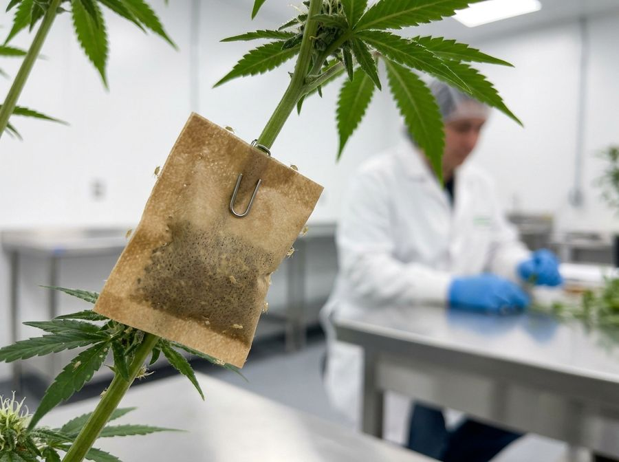
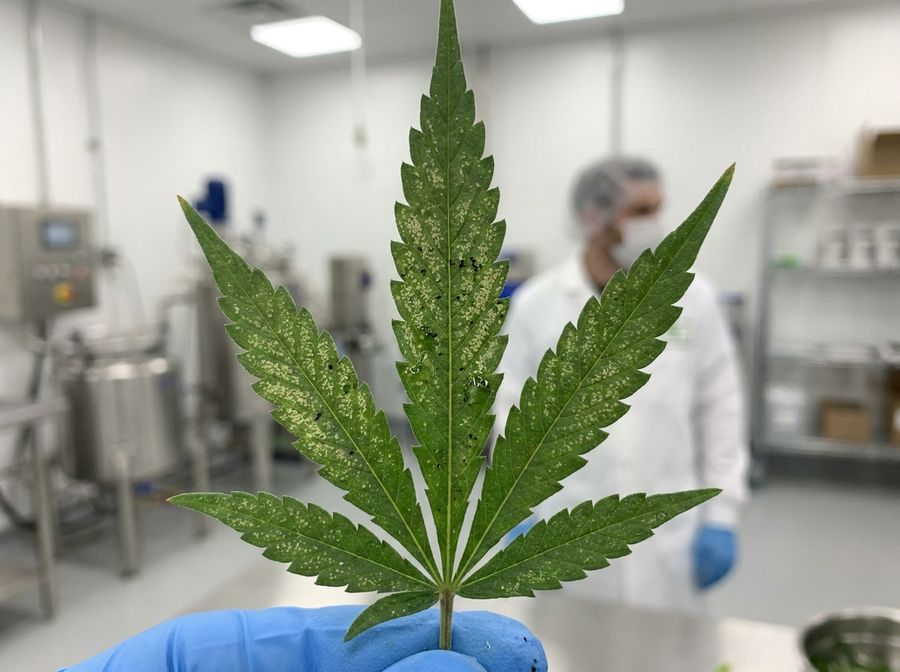

Pest identification and control
This paper shows how to identify the eight pests that cause the most damage to cannabis, and how to keep their numbers small. It gives the life cycle of each pest, how to monitor it, and the biological controls and treatments that you can apply. Use it with the IPM decision procedure.
Purpose and scope
This paper is for a new grower. It shows how to identify the eight groups of pests that most frequently cause damage to cannabis, and how to keep their numbers small. The groups are: spider mites, russet and broad mites, thrips, fungus gnats, aphids and root aphids, whitefly, and caterpillars.
For each pest, the paper shows how it looks, how quickly its population increases, and how to monitor it. The paper also shows how to apply a treatment to each pest, with biological controls (organisms) and with sprays.
Use this paper with the IPM SOP. The IPM SOP is a different paper with the decision procedure. It tells you when to apply a treatment and which treatment to use. Read this paper to identify the pests. Read the IPM SOP to operate the program.
- The paper names 8 pest groups. For each group, it gives the signs, the life cycle, the monitoring, the biocontrol, and the treatment
- The paper is for a new grower. Each term has a definition where the term first occurs
- Use this paper with the IPM SOP (the decision procedure). This paper is the reference for identification
- Prevention and detection at the start are the most important tasks, because each pest increases in number more quickly than you can spray
| Pest | Where it eats | Sign of the pest | Fastest cycle | Primary biocontrol |
|---|---|---|---|---|
| Spider mites | Bottom surface of the leaf | Thin webbing and pale stippling (30x loupe) | Approximately 3 days | Phytoseiulus persimilis |
| Russet mites and broad mites | Growing tips | New growth that is cupped, glossy, and twisted (60-100x necessary) | Approximately 1 week | Amblyseius swirskii |
| Thrips | Leaf surface | Silver streaks and black frass dots | Approximately 1-2 weeks | Amblyseius cucumeris |
| Fungus gnats | Roots / wet media | Dark flies above the medium and larvae in the soil | Approximately 2-3 weeks | Steinernema feltiae |
| Aphids | New growth | Soft groups of aphids, white molted skins, and honeydew | Approximately 1 week | Aphidius parasitoid wasps |
| Root aphids | Crown / roots | Yellow leaves, and you see no pest in the canopy | Approximately 1-2 weeks | Beneficial nematodes |
| Whitefly | Bottom surface of the leaf | A large group of white flies in the air when you move the plant | Approximately 2-3 weeks | Encarsia / Eretmocerus |
| Caterpillars | Flowers / buds | Frass and holes. They cause bud rot. | Approximately 2-3 weeks | Bacillus thuringiensis (Btk) |
Definitions
This section gives the terms that occur many times in this paper and in the IPM SOP. It is not necessary to know the terms at this time, because each term occurs again.


Evidence and limitations
We want each paper to be correct. Thus we examine each paper for information that is not solid. This information comes from the view of one grower, from a small number of sources, or from grower methods that have no controlled test. We identify this information, and we do not show it as solid.
Frequently there is no paper for the decision that you must make. Then we use the reports of other growers and the methods that work in the rooms that we know. This information can help you, but it is not the result of a laboratory test. Use the methods that work for your plants, for your room and for your meters. If a table does not agree with your crop, use the data from your crop and record the difference.
- Before you apply a treatment, use a loupe or microscope to identify the pest. Different pests can be almost the same visually.
- If you know the life cycle of the pest, you can select the correct time for each control.
- The signs of frequent cannabis pests on plants, and the biocontrol agent for each pest where you can use it.
- Very short life-cycle times (for example, a life cycle of 3 days) as typical times. These times occur only in conditions that are very hot and dry.
- Estimates for the density of sticky traps as the best values that tests show.
If you find an error, make a report. We will correct it. Make the report on GitHub, with the name of the paper and the information that is incorrect. If you have a source, include it: Make a report of an accuracy problem. The regulations, labels and licenses of your area always override each procedure in these papers. The label weak in a paper shows the points where the risk of an error is highest.
Pests that remove sap from leaves: spider mites, thrips, aphids, and whiteflies
These four pests are sap-suckers. They make holes in the cells of leaves and stems, and they remove sap. As a result, they cause the same damage: pale stippling, changes of shape, and weak growth.[2] The secondary signs of each pest are different. Use these signs to identify each pest.
- Spider mites: stippling on the bottom of the leaf and thin webbing. In hot, dry conditions, the time from egg to adult is frequently approximately one week (in some conditions, less than two weeks). A female frequently makes approximately 100 eggs in its life. The correct times change with the temperature and the host.
- Thrips: silver streaks, and frass dots that are small and black. The thrips fall to the medium and become pupae there. Thus sprays on the leaves do not touch one full stage of their life.
- Aphids: soft groups on new growth, white molted skins, and honeydew. Black sooty mold starts on the honeydew. Adult aphids can make new aphids, and not eggs. As a result, the population increases very quickly.
- Whitefly: small white adults. Their shape is almost the same as the shape of a moth. When you move the plant, a large group of the adults moves into the air. The leaves become equally yellow, and the bottom of the canopy becomes weak.
The cannabis aphid (Phorodon cannabis) is the aphid that is most related to cannabis. At this time, growers know it as a pest in North America.[3] The same cause applies to all four pests: the environment. Warm and dry conditions make each life cycle shorter. Thus the first method is climate control, and not the spray.
Pest monitoring and scouting each week
You cannot keep the population of a pest small if you do not measure it. The most important method that you have is to find the pests at the start. Do a scouting walk each week on the same day. Examine the bottom of the leaves, the growing tips, the flowers, and the root zone. When the rooms become hotter, increase this to two times each week.
Hang yellow sticky cards at the height of the canopy for thrips, whitefly, and fungus gnat adults. As a start point, use a density of approximately one card for each 100 m² (approximately 1,076 ft²). More cards give a better signal. Put the cards for fungus gnats low, near the surface of the medium, where the adults move in the air. Each week, record the number on each card. Then you know the trend and not only one reading.
- Do the scouting each week on the same day. When the temperature and the speed of the life cycle increase, examine the plants two times each week
- Yellow sticky cards: a minimum of approximately 1 for each 93 m² (1,000 ft²). Put the cards low at the medium for fungus gnats. Put the cards at the height of the canopy for thrips and whitefly
- Record the number on each card each week. A trend that increases (not one number) is the alarm
- Use a 30x loupe for spider mites and a 60-100x scope for russet mites and broad mites. Examine the bottom of the leaves, the tips, the flowers, and also the roots
- Each facility sets the action threshold for the facility. For example, one grower accepts 10-15 thrips/card/week. A different grower, with viruses in the previous crops, accepts less than 5
Biological controls and treatments for each pest
Select the correct tool for each pest, and for preventative use or curative use. For spider mites, the specialist predator Phytoseiulus persimilis is the fast curative agent. But the humidity must be more than approximately 60% relative humidity (RH) for this predator. You can use Neoseiulus californicus or Amblyseius swirskii as preventative agents. For thrips, use Amblyseius cucumeris or swirskii at approximately 100-300 mites for each square meter. You usually see the effect after approximately 3 weeks.[5]
For aphids, use parasitoid wasps of the correct species (Aphidius colemani for green peach aphid and Aphidius matricariae for cannabis aphid) and the fungus Beauveria bassiana, which kills insects. For whitefly, use Encarsia wasps or Eretmocerus wasps, and swirskii. For fungus gnats, apply a drench in the medium with Steinernema feltiae nematodes and the bacterium Bti, approximately each 2 weeks. For caterpillars, use Bacillus thuringiensis kurstaki (Btk). Btk kills only larvae that eat it. Tests on cannabis pests include some of these biopesticides.[8]
Do not apply sulfur in flowering. It can cause residue, a bad aroma or flavor, and phytotoxicity on the buds. Predatory mites and micronized sulfur decrease the number of russet mites and broad mites.
| Pest | Preventative | Curative | Microbial / spray | Important condition |
|---|---|---|---|---|
| Spider mites | N. californicus / swirskii | P. persimilis | Insecticidal soap, oils | P. persimilis: more than 60% RH is necessary |
| Russet mites and broad mites | A. swirskii | Predatory mites | Micronized sulfur | No sulfur in flowering |
| Thrips | cucumeris / swirskii (100-300/m2) | Soil predators for pupae | Beauveria bassiana | Apply to the canopy and also to the medium |
| Fungus gnats | S. feltiae nematodes | Bti drench (each approximately 2 weeks) | Bti / Gnatrol | Apply the treatment to the wet medium |
| Aphids | Aphidius wasps | Use the wasp of the correct species | Beauveria bassiana | colemani and matricariae |
| Root aphids | Beneficial nematodes | Soil drench | Beauveria bassiana | The pest is below the ground. Apply a drench to the roots |
| Whitefly | Encarsia / Eretmocerus | Add swirskii | Insecticidal soap | The pest continues to occur. Start before the population increases. |
| Caterpillars | Scouting and Btk at the start | Btk spray | Bacillus thuringiensis (Btk) | The larva must eat it |
Troubleshooting
Most large pest problems have their cause in incorrect diagnosis and an incorrect time of treatment, and not in the products. The same errors occur in many facilities. A scope and a calendar prevent all of them.
| Symptom | Usual cause | Make sure and correct |
|---|---|---|
| Twisted, glossy new growth | Russet mites or broad mites (not nutrients) | Make sure of the cause at 60-100x before you change the feed |
| Thrips or gnats increase again after you spray | The spray does not touch the pupae or larvae in the soil | Apply the treatment to the medium and also to the canopy, and not only to the leaves |
| You released biocontrol agents, but the pest population continues to increase | You released the agents after the correct time, when the pest population increased very quickly | Release the agents before the pests come (preventative). Predators cannot increase as quickly as the pest population. |
| The population of P. persimilis decreases, and the pest mites stay | The room has less than approximately 60% RH. This humidity is incorrect for the agent | Increase the RH, or select a predator for drier air |
| Residue, or a bad aroma or flavor, at harvest | You used sulfur or strong oils in flowering | Stop the sulfur and the strong oils before bloom starts |
| The new crop has pests from the first day | You did not do a quarantine of the clones and mother plants | Isolate and examine each plant that comes into the facility |
There are three possible causes. The identification of the pest is incorrect. The treatment did not touch each stage of the life cycle (the stage in the soil also). The environment is not correct for the agent. Most biocontrol that has no effect has one of these three causes.
Expected results and limitations
Usually, you do not remove all the pests. You keep the pest population less than the action threshold, for a long time. Biological control is slow. You usually see the effect on thrips approximately 3 weeks after you release the agents. To stop a cycle of fungus gnats, use traps for the adults and kill the larvae. The time that is necessary is usually 4-8 weeks.[7]
Prevention is the treatment with the lowest cost. Put each clone that comes into the facility in quarantine and examine it. Keep the mother plants clean (a mother plant with pests makes cuttings with pests). Control the humidity and the airflow. Sanitize the tools and the rooms. Do the scouting each week, and do not stop.
A facility that prevents pests and finds them at the start has much lower costs for curative agents and much less crop loss. A facility that waits for outbreaks and then applies treatments has higher costs and more crop loss.
- The correct result is a pest population less than the threshold, and not zero pests. Prevention gives clean crops, and sprays that you apply in an emergency do not.
- Biological controls are slow, but they continue for a long time. For thrips, you see the effect after approximately 3 weeks. To stop a cycle of fungus gnats, approximately 4-8 weeks are necessary.
- Prevention steps: put clones in quarantine, keep mother plants clean, control RH and airflow, sanitize, and do the scouting each week.
- A mother plant with pests always gives clones with pests. The mother room is the most important point to examine.
Compare your results with the thresholds in the IPM SOP. Then you know if the program works correctly. Use good airflow design. It removes the warm areas with high humidity and no air movement where pests are.
References
- Ahmed, M. Z., McKenzie, C. L., & Osborne, L. S. (2024). Arthropod and mollusk pests of hemp, Cannabis sativa (Rosales: Cannabaceae), and their indoor management plan in Florida. Journal of Integrated Pest Management, 15(1), 1. https://doi.org/10.1093/jipm/pmad028
- Pulkoski, M. A., & Burrack, H. J. (2023). Assessing the impact of piercing-sucking pests on greenhouse-grown industrial hemp (Cannabis sativa L.). Environmental Entomology, 53(1), 1-10. https://doi.org/10.1093/ee/nvad044
- Cranshaw, W., Halbert, S. E., Favret, C., Britt, K., & Miller, G. L. (2018). Phorodon cannabis Passerini (Hemiptera: Aphididae), a newly recognized pest in North America found on industrial hemp. Insecta Mundi, 0662, 1-12. https://digitalcommons.unl.edu/insectamundi/1162/
- Cranshaw, W., & Wainwright-Evans, S. (2020). Cannabis sativa as a host of rice root aphid (Hemiptera: Aphididae) in North America. Journal of Integrated Pest Management, 11(1), 15. https://doi.org/10.1093/jipm/pmaa008
- Lopez, L. (2023). Meet Amblyseius swirskii (Acari: Phytoseiidae): a commonly used predatory mite in vegetable crops. Journal of Integrated Pest Management, 14(1), 20. https://doi.org/10.1093/jipm/pmad018
- van Maanen, R., Vila, E., Sabelis, M. W., & Janssen, A. (2010). Biological control of broad mites (Polyphagotarsonemus latus) with the generalist predator Amblyseius swirskii. Experimental and Applied Acarology, 52(1), 29-34. https://doi.org/10.1007/s10493-010-9343-2
- Cloyd, R. A. (2015). Ecology of fungus gnats (Bradysia spp.) in greenhouse production systems associated with disease-interactions and alternative management strategies. Insects, 6(2), 325-332. https://doi.org/10.3390/insects6020325
- Effects of Selected Biopesticides on Two Arthropod Pests of Cannabis sativa L. in Northeastern Oregon. (2024). Crops, 4(4), 19. https://doi.org/10.3390/crops4040019
Each citation in the paper, for example [1], refers to an item in this list. Each item is a primary source or an instruction from an authority, unless the item shows a different type. The results of cannabis tissue culture change much with the genotype. Before you use the dilutions, hormone doses and local regulations, make sure that they agree with the primary sources.